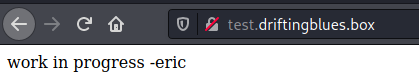
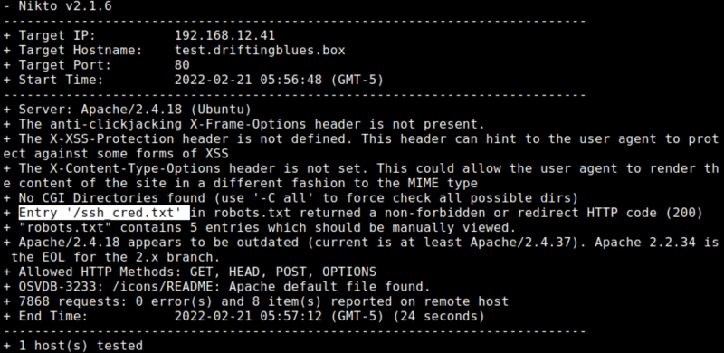
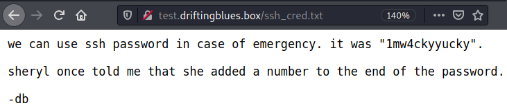
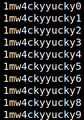

3.3 Vhost test.driftingblues.box
1. Add the subdomain to your Kali Machine “/etc/hosts/ file the line ”192.168.12.41 test.driftingblues.box".
$sudo nano /etc/hosts
2. Visit http://test.driftingblues.box/.

3. Enumerate the vhost with “nikto”.
$nikto -h http://test.driftingblues.box/
Output:

/ssh_cred.txt returns 200 code.4. Visit http://test.driftingblues.box/ssh_cred.txt.

The message says that the password needs a number at the end of it.
5. Create a bash script to add a number to the password.
$for i in {0..9}; do echo 1mw4ckyyucky${i};done | tee wordlist
Output:
